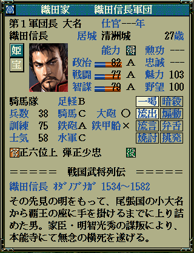
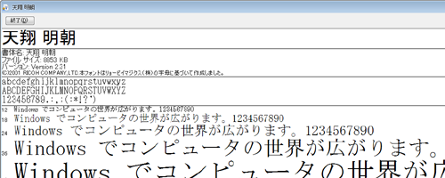
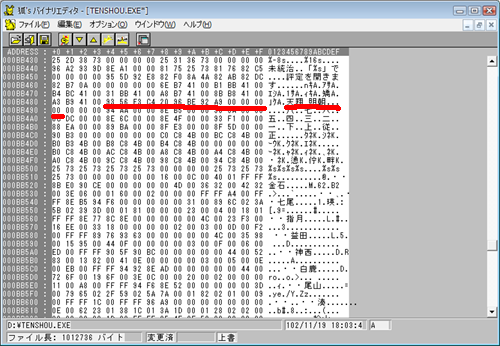

このフォントは最も天翔記を美しく閲覧することが出来るよう細かく調整されたフォントです。
TSModのデフォルトの設定フォントも、このフォントとなります。
以下のようにフォントが｢美しく調整された｣明朝となります。

インストール方法は、通常のフォントと同じです。
｢tsmincho.ttf｣ファイルを｢C:\WINDOWS\Fonts｣フォルダにペーストすると、自動的にインストールされます。

TSMod設定キットが導入されていれば、
特に何も意識せずとも、「天翔 明朝」がデフォルトフォントとなります。
TSMod設定キットを利用せずに、直接tenshou.exeを編集する場合は、｢ＭＳ 明朝｣と指定した代わりに、｢天翔 明朝｣と指定して下さい。
その場合の方法は、｢ＭＳ 明朝｣を使うために行う方法と同様です。
| 天翔 明朝 + NULL４つ 93 56 E3 C4 20 96 BE 92 A9 00 00 00 00  |
｢ＭＳ 明朝｣はシステムの準標準とさえ言える、固定幅フォントであり、
これを直接、天翔記のために改変するのは、現実的ではありません。
そこで、｢ＭＳ 明朝｣と別に｢天翔 明朝｣を用意することで、
｢天翔記｣用途専用に自由に改変出来るようにした、ということになります。
特にフォントエディター等のツールを利用して、この｢天翔 明朝｣の｢使われない漢字エリア｣を｢外字エリア｣に見立てて利用すれば、
無限に近いほどの、外字登録エリアを得ることが出来ます。